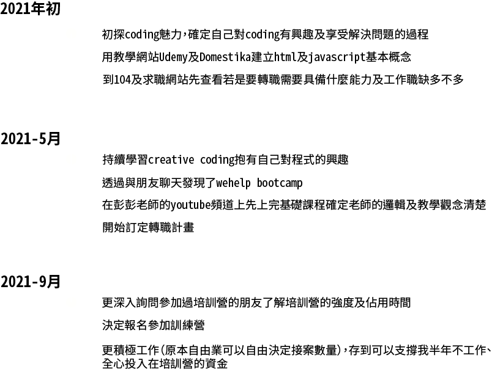
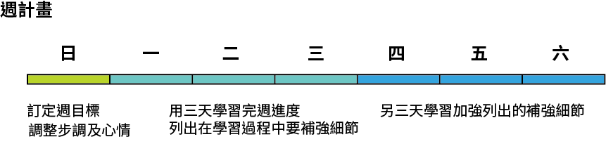
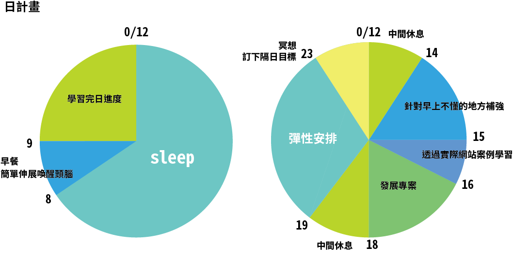

在就職於電影產業期間我仍然保有對其他事物的熱情，利用網路資源持續在學習不同的東西例如動畫建模及動態設計，在這個過程中我發現一般動畫軟體是用參數去調整動作或模型，但有另一種做動畫的方式是用coding直接做出角色的動作，這種直接從無到有的創造引發了我對coding的興趣，慢慢的也在教學網站上開始自學creative coding，更是發現程式語言的奧妙-不只可以coding出畫面、聲音甚至做出互動。
也由於畢業於設計系，身邊不乏有朋友是UI/UX設計師，其中最常聽到他們反應與工程師溝通不良，工程師並不在意他們設計的細節，但他們也因為不了解工程師的領域很難與他們做技術上的交流，在這些聊天的過程中也讓我初步有成為前端工程師的想法：我想成為一個兼具美感與技術的工程師，不只是寫程式，而是用我所學減少設計師與前端工程師的隔閡。
在決定要做一個工程師後最先做的事就是先了解整個產業結構，例如前端、後端與全端彼此的工作內容及關係，透過網路先查看一些前輩整理出的資料及諮詢身邊的工程師朋友，大致上也做出了簡單整理：
| 前端 | 後端 | 全端 | |
| 常見工作分配 | 處理使用者看得見的部分
建立流暢的使用者介面 |
處理商業邏輯
給與前端 API 維護Server各種效能、安全性與自動化問題 處理資料庫的議題 |
前端＋後端 |
| 使用語言 | HTML、CSS、JavaScript | 多樣，依照不同系統各有不同
ex.Ruby、Python、PHP、Java、 JavaScript 至少需精通其中一種語言 |
前端＋後端 |
| 需要個人特質 | 基本美感、對設計的理解
能站在使用者角度去思考的同理心 |
邏輯思考能力佳
擁有設計和操作資料庫的能力 了解商業模式和產品特性 |
前端＋後端 |
| 易懂比喻 | 點餐櫃檯 | 出餐後臺 | 自助式商店 |
在對前、後端及全端工程師有了基本理解後我也整理了我轉職的優勢：
- 過去的設計訓練讓我對網站或手機介面都已有基本的美感及UI/UX概念
- 英文能力佳，可直接閱讀原始資料，更快找到解決方法
- 不論是在學時製作畢業製作自己開發人脈及自學需要用到但尚未學到的技術，或者畢業後持續自己透過教學網站持續學習不同軟體都讓我對我自己的自學能力有信心，我充分了解自己學習習慣，知道如何透過自學獲得最大效益
- 大學時進行過不只一次的設計專案，甚至畢業製作更是花了一年投入一個專案製作，很瞭解如何依照不同專案的製作時間不同分配時間及工作進度
在整理完個人優勢及了解成為一個前端工程師該擁有的特質及學習的技術後，在8月的尾聲我便立即投入準備，大致可分成三階段
在訂定時間規劃前首先我參考求職網上的技能要求整理出了我半年後想達成的目標
- 熟悉 HTML、CSS 以及 JavaScript 等前端語言
- 實際應用過 React/Vue 任何一種前端框架
- 完整參與過一個專案的經驗，並在參與專案同時開發未來有興趣發展的專案
列出這些期望達成的目標後，我更確定我需要的不只是在家自學，參與培訓營可以讓我實質達成我的第二及第三點目標，而我認為實際參與專案，使用學習知識更能讓自己清楚自己的盲點及學習效果有沒有達到目標。
而我的時間規劃除了大方向搭配彭彭老師的課程學習進度及專案進度外，主要訂定了週規劃及日規劃
 我認為這樣的時間規劃有彈性又適合長期投入一個計畫，除了執行外，每個月也會視學習進度及個人狀況加強或調整，檢視自己的學習進度外也調整學習步調。
而學習來源除了彭彭的網站外，也包括其他線上資源，例如，MDN Web Docs、W3schools，免費教學網站edx 、必要時也使用付費學習網站Coursera及Udemy。
除了線上學習資源外，不理解的部分也翻閱實體書籍javascript大全等相關書籍，更有脈絡的理解程式語言。
然而只要有目標，就會有挫折
在快三年的拍片生涯中，其中一個我的成長便是—抗壓性，拍片是個很高壓的工作－前置時間短、業務範圍廣，每一個案子都有可能需要在短時間內接觸不熟悉的事情並且完成（例如：舞台搭設、燈光電路、花藝等等），在這過程中幾乎不可能一次到位或是一下子就熟悉所有事情。我認為我在這個工作其中一件學到的事就是－學習中滿是挑戰，承認自己的不足，接受它，找出解法，並且在一次一次的練習中進步，這些步驟很老套，但這就是進步的公式。
套用到這次的學習過程，我認為最可能碰到的挫折主要有二：一是實際上程式技術層面遇到困難，二是面對轉職的焦慮。
如何面對技術層面的困難？
我認為跟一般學習的解法是差不多的：先思考問題可能在哪，然後找出答案，找出答案我認為我的步驟如下：
- 透過線上資源找答案
- 詢問工程師朋友
- 在培訓營期間的討論
第一種方法很直觀，在遇到問題時直接上網打關鍵字，幾乎就可以從廣大的網路資源大致上了解解決方向及大概問題出在哪，但是網路上的資料大多不夠深入，這時就可以縮小問題範圍，進入下個方法—詢問身邊的工程師朋友，很幸運的，我有個室友剛好是位前端工程師，同時也是WeHelp第一屆成員－廖浩宇，縮小問題範圍再詢問，通常可以得到更深入地解答，同時也得到一些更深入的資訊。
在自己吸收整理過後，再進入下個解法：在培訓營期間提出，和學員互相交流，可以更多元的知道是否大家有遇過類似的問題，各自是如何解決，不只更廣泛的吸收到知識，也能促進成長。
如何面對轉職的焦慮？
情緒的穩定度我認為對一個需要長期投入、學習的計畫影響十分大，穩定的心情不只可以保證學習的效率，也能促成穩定的進度成長。然而保持心情穩定及不輕易放棄說得輕巧，該如何用具體方法實踐呢？這邊也列了三點說明：
- 固定的運動及冥想
- 合理的進度安排
- 適度排解情緒
固定的運動及冥想是我一直以來的習慣，除了保持體力更能保持心靈穩定度，讓思緒透過歸零的過程能保持清晰。而合理的進度安排能有效減少焦慮，看著進度表也能說服自己正在朝著目標前進。
至於排解情緒，每個人有不同的做法，對我來說最有效的方法就是－好好睡個覺吧！
在專案結束後，目前傾向加入乙方接案公司團隊，例如：果思設計、墨雨設計、dosomething studio。
加入乙方公司可以接觸不同類型專案，也能從各專案發現不同的問題及解法，我認為乙方公司的工作較為符合我的個性－對不同事物好奇以及追求新鮮感，在這個不斷探索的過程中也能累積不同專案經驗，為未來職場加分，長期目標希望自己能成為一名了解架設網站/app各部門如何運作，促成前端v.s後端以及前端v.s設計良好構通的資深前端或是PM。
最後的最後，希望能參加這次WeHelp培訓計畫，非常期待和不同正在轉職的人交流，及長時間投入專案累積作品，期待接下來的旅程！